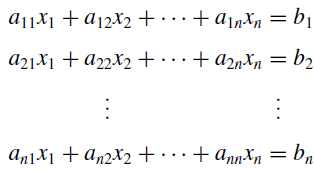
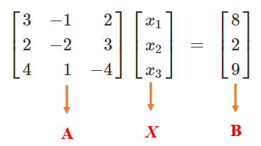
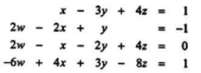
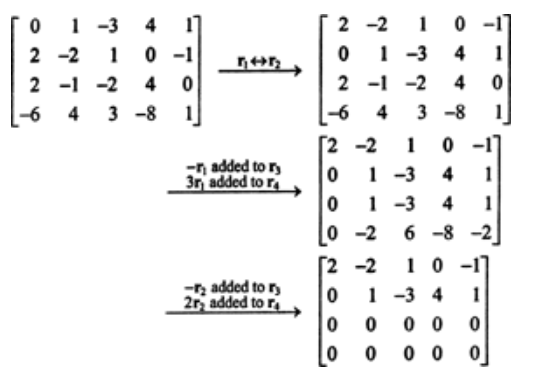
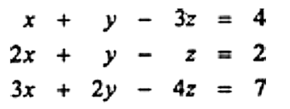
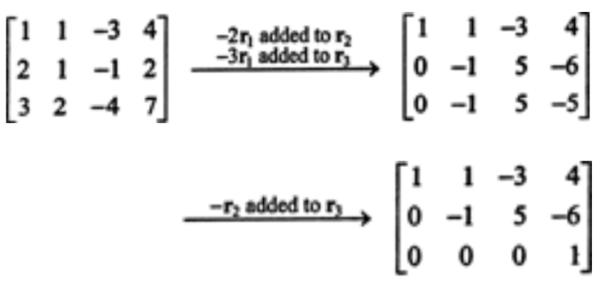
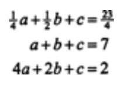
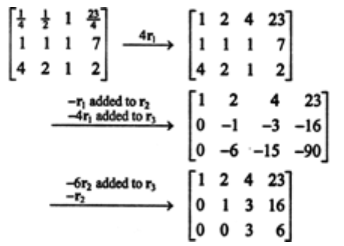
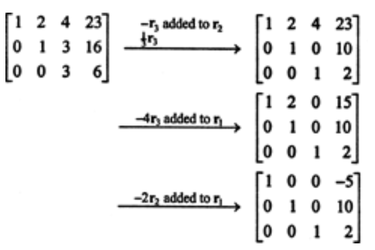

Topic 12 Gauss Elimination Method
We discuss numerical solutions to the linear system of equations. Consider the following general linear system of equations

The goal is to find the solution to this system. There are different methods to solve the linear system. One way is to re-express the linear system into a matrix equation and then solve the matrix equation.
Example 1 Consider the following linear system of functions
\[ \begin{array}{ccc} 3x_1 - x_2 + 2x_3 & = & 8 \\ 2x_1 - 2x_2 + 3x_3 & = & 2 \\ 4x_1 + x_2 - 4x_3 & = & 9 \end{array} \]
We can re-write the above system of linear equations into the following matrix form

We denote
\[ \mathbf{A} = \left[ \begin{array}{ccc} 3 & -1 & 2 \\ 2 & -2 & 3 \\ 4 & 1 & -4 \end{array} \right] \] be the coefficient matrix.
\[ \mathbf{X} = \left[ \begin{array}{c} x_1 \\ x_2 \\ x_3 \end{array} \right] \]
the vector of unknown, and
\[ \mathbf{B} = \left[ \begin{array}{c} 8 \\ 2 \\ 9 \end{array} \right] \]
Then, the matrix form of the equation is equivalent to \(\mathbf{A}\mathbf{X} ~=~ \mathbf{B}\). If the inverse of \(\mathbf{A}\), denoted by \(\mathbf{A}^{-1}\), exists, we multiply \(\mathbf{A}^{-1}\) to the left of the matrix equation to get the solution of the linear system in the following
\[ \mathbf{X} = \mathbf{A}^{-1}\mathbf{B} \]
Finding the inverse of the matrix could be a challenge when the system is large. The R built-in function solve() to calculate the inverse of a matrix (if it exists).
For example, the inverse of \(\mathbf{A}\) can be found using the following code.
A = matrix(c(3, -1, 2, 2, -2, 3, 4, 1, -4), ncol = 3, byrow = TRUE)
A.inv = solve(A)
A.inv # print out the ## [,1] [,2] [,3]
## [1,] 0.3333333 -0.1333333 0.06666667
## [2,] 1.3333333 -1.3333333 -0.33333333
## [3,] 0.6666667 -0.4666667 -0.26666667## [,1] [,2] [,3]
## [1,] 1 -2.220446e-16 -2.220446e-16
## [2,] 0 1.000000e+00 -1.110223e-16
## [3,] 0 0.000000e+00 1.000000e+00Two ways to find the solution to the system
## [,1]
## [1,] 3
## [2,] 5
## [3,] 2## [1] 3 5 212.1 Naive Gaussian Elimination Methods
Linear algebra texts discuss elimination methods to find the solution. The method has two processes: elimination and backward substitution. We use the equation in the above Example 1 to review the elimination method.
Recall the linear system
\[ \begin{array}{ccc} 3x_1 - x_2 + 2x_3 & = & 8 \\ 2x_1 - 2x_2 + 3x_3 & = & 2 \\ 4x_1 + x_2 - 4x_3 & = & 9 \end{array} \]
We define the following augmented matrix.
\[ \mathbf{A} = \left[ \begin{array}{ccccc} 3 & -1 & 2 & \vdots & 8\\ 2 & -2 & 3 & \vdots & 2\\ 4 & 1 & -4 & \vdots & 9\\ \end{array} \right] \]
Solution We show the detailed steps of forward elimination and backward substitution.
Forward Elimination
We use \(R_1\), \(R_2\), and \(R_3\) to denote the three rows of the above-augmented matrix and then find the solution in the following \(r = 3 - 1\) steps:
Step 1 The equation in the first row is called pivot equation and \(a_{11} = 3\) is called pivot element. We first do the following row operations so that the elements in the first column of the resulting new augmented matrix are all zeros except for the one in the pivot element.
1.1. Multiply \(-a_{21}/a_{11}\) to \(R_1\) and add it to \(R_2\) to update \(R_2\). Row 2: \(i = 2\)
\[ R_2 \leftarrow R_2 -(a_{21}/a_{11})\times R_1 = (a_{21}, a_{22}, a_{23}, b_2) - \frac{a_{21}}{a_{11}}(a_{11}, a_{12}, a_{13}, b_1) \]
\[ = (a_{21} - \frac{a_{21}}{a_{11}}\times a_{11}, a_{22} - \frac{a_{21}}{a_{11}}\times a_{12}, a_{23}-\frac{a_{21}}{a_{11}}\times a_{11}, b_2-\frac{a_{21}}{a_{11}}\times a_{11}) \]
\[ =(2,-2, 3, 2) - \frac{2}{3}(3,-1,2,8) = (0, -4/3, 5/3, -10/3) \]
The above step can be computed using the implicit loop through vector operation in any vectorized programming language
1.2 Multiply \(-4/3\) to \(R_1\) and add it to \(R_3\) to update \(R_3.\) Row 3: \(i = 3\)
\[ R_3 \leftarrow R_3 - (a_{31}/a_{11}) \times R1 = (a_{31}, a_{32}, a_{33}, b_3) - \frac{a_{31}}{a_{11}}(a_{11}, a_{12}, a_{13}, b_1) \]
\[ =(4,1,-4,9) - \frac{4}{3}(3, -1, 2, 8) = \left(0, \frac{7}{3}, -\frac{20}{3}, -\frac{5}{3} \right) \]
After this step, we have the updated augmented matrix for the next step elimination.
\[ \left[ \begin{array}{ccccc} 3 & -1 & 2 & \vdots & 8\\ 0 & -4/3 & 5/3 & \vdots & -10/3\\ 0 & 7/3 & -20/3 & \vdots & -5/3\\ \end{array} \right] \]
Step 2: The equation in the first row is called pivot equation and \(a_{22} = -4/3\) (CAUTION: using the above updated augmented matrix!)is called pivot element. We next do row operation: \(R_3 - \frac{a_{32}}{a_{22}}\times R_2\) so that the resulting new augmented matrix. Row 3: \(r = 3\).
\[ R_3 \leftarrow R_3 - \frac{a_{32}}{a_{22}}\times R_2 = (a_{31}, a_{32}, a_{33}, b_3) - \frac{a_{32}}{a_{22}}(a_{21}, a_{22}, a_{23}, b_2) \]
\[ = \left( 0, \frac{7}{3}, -\frac{20}{3}, -\frac{5}{3}\right) - \frac{7/3}{-4/3}\left(0, -\frac{4}{3}, \frac{5}{3}, -\frac{-10}{3} \right) = \left(0, ~~0, ~~-\frac{15}{4}, -\frac{15}{2} \right) \]
With the above row operation, we have the following updated augmented matrix that has a triangular coefficient matrix.
\[ \left[ \begin{array}{ccccc} 3 & -1 & 2 & \vdots & 8\\ 0 & -4/3 & 5/3 & \vdots & -10/3\\ 0 & 0 & -15/4 & \vdots & -15/2\\ \end{array} \right]. \]
If we re-write the above-augmented matrix into the linear system of equations, we have
\[ \left\{ \begin{array}{ccccc} 3x_1 & - x_2 & 2x_3 & = & 8\\ & -\frac{4}{3}x_2 & \frac{5}{3}x_3 & = & -\frac{10}{3}\\ & & -\frac{15}{4}x_3 & = & -\frac{15}{2}\\ \end{array} \right. \]
Backward Substitution
Next, we do backward substitution to find the solution to the system. The general backward substitution is given by
\[ x_i =\frac{1}{a_{ii}}\left(b_i-\sum_{j=i+1}^3 a_{ij}x_j \right), \]
where \(i = 3-1, 3-2\). However \(i = 3\)
\[ x_3 = \frac{b_3}{a_{33}} = \frac{-15/2}{-15/4} = 2. \]
We start from row 3 of the last augmented matrix:
Row #3: \(r = 3\):
\[ x_3 = \frac{b_3}{a_{33}} = \frac{-15/2}{-15/4} = 2. \] Row #2: \(r=2\) \[ x_2 = \frac{1}{a_{22}}\left( b_2 - a_{23}x_3 \right)= -\frac{1}{4/3}\left(-\frac{10}{3} - \frac{5}{3}\times 2\right) = \frac{3}{4}\frac{20}{3} = 5. \]
Row #1: \(r = 1\)
\[ x_1 = \frac{1}{a_{11}} \left(b_1 -[a_{12}x_2 + a_{13}x_3] \right) = \frac{1}{3}\left(8-[-1\times 5 + 2\times 2]\right) = \frac{1}{3}(8-(-1)) = 3. \]
Therefore, the solution to the above system linear equation is \((x_1, x_2, x_3) = (3, 5, 2)\).
Remark: We re-arrange the following linear system of linear equations
\[ \left\{ \begin{array}{ccccc} 3x_1 & - x_2 & 2x_3 & = & 8\\ & -\frac{4}{3}x_2 & \frac{5}{3}x_3 & = & -\frac{10}{3}\\ & & -\frac{15}{4}x_3 & = & -\frac{15}{2}\\ \end{array} \right. \]
to get the following equivalent linear system
\[ \left\{ \begin{array}{ccccc} -\frac{15}{4}x_3 & & & = & -\frac{15}{2}\\ \frac{5}{3}x_3& -\frac{4}{3}x_2 & & = & -\frac{10}{3}\\ 2x_3 & -x_2 & + 3x_1 & = & 8\\ \end{array} \right. \]
That can be re-written in the following matrix form
\[ \left[ \begin{array}{ccc} -\frac{15}{4} & 0 & 0 \\ \frac{5}{3} & -\frac{4}{3} & 0 \\ 2& -1 & 3 \end{array} \right] \left[ \begin{array}{c} x_3 \\ x_2 \\ x_1 \end{array} \right] = \left[ \begin{array}{c}-\frac{15}{2} \\ -\frac{10}{3} \\ 8 \end{array} \right] \]
The augmented matrix of the above linear system of equations can be written as
\[ \left[ \begin{array}{ccccc} -\frac{15}{4} & 0 & 0 &\vdots & -\frac{15}{2}\\ \frac{5}{3} & -\frac{4}{3} & 0 &\vdots & -\frac{10}{3} \\ 2 & -1 & 3 & \vdots & 8 \end{array} \right] \]
We can repeat the Gaussian forward elimination with the above-augmented matrix:
- pivot element \(a_{11} = -\frac{15}{4}\)
\[ R_2 \leftarrow R_2-\frac{a_{21}}{a_{11}}R_1 = \left(\frac{5}{3}, -\frac{4}{3},0, -\frac{10}{3} \right)-\frac{5/3}{-15/4}\left(-\frac{15}{4}, 0, 0, -\frac{15}{2} \right) =\left(0, -\frac{4}{3}, 0, -\frac{20}{3} \right) \]
\[ R_3 \leftarrow R_3 - \frac{a_{31}}{a_{11}}R_1 = \left(2,-1,3,8 \right) - \frac{2}{-15/4}\left(-\frac{15}{4}, 0, 0, -\frac{15}{2} \right) = \left(0,-1, 3, 4 \right) \]
We obtain the following updated augmented matrix
\[ \left[ \begin{array}{ccccc} -\frac{15}{4} & 0 & 0 &\vdots & -\frac{15}{2}\\ 0 & -\frac{4}{3} & 0 &\vdots & -\frac{20}{3} \\ 0 & -1 & 3 & \vdots & 4 \end{array} \right] \] We need one more row operation on the above-augmented matrix
\[ R_3 \leftarrow R_3 - \frac{a_{32}}{a_{22}}R_2 = \left(0, -1, 3, 4 \right) - \frac{-1}{-4/3}\left(0, -\frac{4}{3}, 0, -\frac{20}{3} \right) = \left(0, 0, 3, 9 \right) \]
The final augmented matrix has the following form
\[ \left[ \begin{array}{ccccc} -\frac{15}{4} & 0 & 0 &\vdots & -\frac{15}{2}\\ 0 & -\frac{4}{3} & 0 &\vdots & -\frac{20}{3} \\ 0 & 0 & 3 & \vdots & 9 \end{array} \right]. \] Its equivalent linear system is given by
\[ \left\{ \begin{array}{ccc} -\frac{15}{4}x_3 & = & -\frac{15}{2}\\ -\frac{4}{3}x_2 & = & -\frac{20}{3}\\ 3x_1 & = & 9\\ \end{array} \right. \] Therefore, the solution to the original system of equation is (using vector operation - pair-wise division)
\[ (x_3, x_2, x_1) = \frac{(-15/2, -20/3, 9)}{(-15/4, -4/3, 3)} = (2,5,3) \]
We will apply the logic used in this example to implement the Gaussian Elimination method (using backward substitution).
12.2 Gaussian Elimination Algorithm
In the elimination step, the first row of the augmented matrix is the basis, and all other elements (cells) in the augmented matrix are updated iteratively using the algorithm using the recursive formula
\[ R_i \leftarrow (a_{i1}, a_{i2}, \cdots, a_{in}, b_i) - \frac{a_{ik}}{a_{kk}}(a_{k1}, a_{k2}, \cdots, a_{kn}, b_k) \]
where
\(k = 1, 2, \cdots, n-1\), the iteration index for selecting the pivot element.
\(i = k+1, k+2, ...n\), the iterator of the row of the augmented matrix.
We focus on Gaussian row elimination. The Gaussian forward elimination and backward substitution (Gauss-Jordan) are optional.
The algorithm of Gaussian is relatively simple compared with the iterative algorithms we learned earlier. We only need to convert the following recursive equation to an algorithm with double loops to accomplish the Gaussian forward elimination.
Gaussian Forward Elimination Algorithm
INPUT: A (augmented matrix)
OUTPUT: A0 (row-echelon matrix)
STEP 1: find n = # of row
STEP 2: FOR i = 1 TO n
STEP 3: IF A[i,i] == 0 DO:
find j with A[j,i] != 0
swap row i and row j
ENDIF
STEP 4: IF A[i,i] != 0 DO:
FOR j = i + 1 TO n DO:
A[j,] = A[j,]-(A[j,i]/A[i,i])*A[i,]
ENDFOR
ENDIF
STEP 5: RETURN A0 The vector operation was used in Step 4 of the pseudo-code. Row-swapping in step 3 could also involve vector operation.
Next, we write R code to implement the pseudo-code.
Gauss.Elimination = function(A){
# Input A: augmented matrix. Make sure that he diagonal
# elements of the coefficient matrix are non-zero!
A0 = A
n = dim(A0)[1] # number of rows
for(i in 1:(n-1)){ # iterator fo pivot element A0[i,i]
# i = 1, 2, ..., n-1
#~~~~~~~~~~~~~~~~~~~~~ Make the function robust ~~~~~~~~~~~~~~~~~~~~~~~~~#
if(A0[i,i] == 0){
non.0 = which(A0[,i] != 0)
#cat("\n\n i =",i, ", non.0 =", non.0,". (i+1):n =", (i+1):n, ".")
id = intersect(non.0, (i+1):n)[1] # which() equiv to find() in MATLAB
if(!is.na(id)){
tempi = A0[i,] # put the i-th row in a place-holder
A0[i,] = A0[id,] # row swapping
A0[id,] = tempi
}
}
#~~~~~~~~~~~~~~~~~~~~~~~~~~~~~~~~~~~~~~~~~~~~~~~~~~~~~~~~~~~~~~~~~~~~~~~~#
if(A0[i,i] != 0){ # A0[i,i] is in the denominator of recursive equation
for(j in (i+1):n){ # to make the augmented matrix in the row echelon form
#cat("\n\n j =",j,".")
A0[j,] = A0[j,] - (A0[j,i]/A0[i,i])*A0[i,]
}
}
}
A0
}We now look at several examples using the above R function Gauss.Elimination().
Example 2: Find the solution of the following system of linear equations.

Solution: Performing Gaussian eliminations (i.e., the series of row operations), we have

##
A1 = matrix(c(0,1,-3,4,1,2,-2,1,0,-1,2,-1,-2,4,0,-6,4,3,-8,1), ncol =5, byrow = TRUE)
Gauss.Elimination(A = A1)## [,1] [,2] [,3] [,4] [,5]
## [1,] 2 -2 1 0 -1
## [2,] 0 1 -3 4 1
## [3,] 0 0 0 0 0
## [4,] 0 0 0 0 0
Example 3 Solve the following system of linear equations.

Solution: Performing Gaussian eliminations (i.e., the series of row operations), we have

## [,1] [,2] [,3] [,4]
## [1,] 1 1 -3 4
## [2,] 0 -1 5 -6
## [3,] 0 0 0 1
Example 4 Solve the following system of linear equations.

Solution: Performing Gaussian eliminations (i.e., the series of row operations), we have

A1 = matrix(c(1/4, 1/2, 1, 23/4, 1,1,1,7,4,2,1,2), ncol = 4, byrow = TRUE)
Gauss.Elimination(A = A1)## [,1] [,2] [,3] [,4]
## [1,] 0.25 0.5 1 5.75
## [2,] 0.00 -1.0 -3 -16.00
## [3,] 0.00 0.0 3 6.0012.3 Gauss-Jordan Elimination (Optional)
####
Gauss.Jordan = function(A){
# A is the augmented matrix
A1 = Gauss.Elimination(A) # perform Gauss elimination
n = length(A1[,1])
id.0 = rep(1,n) # indicator of zero A[i,i]
for (i in 1:n){
if(A1[i,i] == 0) id.0[i] = 0
}
if(sum(id.0) == n){ # A[i,i] != 0
k = n
A2 = A1[k:1, c(k:1,(n+1))] # re-arrange rows and columns
A3 = Gauss.Elimination(A2) # perform Gauss elimination
A4 = A3[k:1, c(k:1,(n+1))] # backward re-arrangement
} else{ # if exists A[i,i] =0
k = which(id.0==0)[1]-1 # select rows and columns for re-arrangement
A2 = A1[c(k:1,(k+1):n), c(k:1,(k+1):(n+1))]
A3 = Gauss.Elimination(A2)
A4 = A3[c(k:1,(k+1):n), c(k:1,(k+1):(n+1))]
}
A4
}Example 5 (continuation of Example 4)
We can perform additional row operations (Gaussian-Jordan) to get

## [,1] [,2] [,3] [,4]
## [1,] 0.25 0 0 -1.25
## [2,] 0.00 -1 0 -10.00
## [3,] 0.00 0 3 6.00
Example 6 (continuation of Example 2) Gauss-Jordan elimination
A6 = matrix(c(0,1,-3,4,1,2,-2,1,0,-1,2,-1,-2,4,0,-6,4,3,-8,1), ncol =5, byrow = TRUE)
Gauss.Jordan(A = A6)## [,1] [,2] [,3] [,4] [,5]
## [1,] 2 0 -5 8 1
## [2,] 0 1 -3 4 1
## [3,] 0 0 0 0 0
## [4,] 0 0 0 0 0
Example 7 (continuation of Example 3) Gauss-Jordan form
## [,1] [,2] [,3] [,4]
## [1,] 1 0 2 -2
## [2,] 0 -1 5 -6
## [3,] 0 0 0 1
Example 8 (continuation of Example 4) Gauss-Jordan form
## [,1] [,2] [,3] [,4]
## [1,] 0.25 0 0 -1.25
## [2,] 0.00 -1 0 -10.00
## [3,] 0.00 0 3 6.00